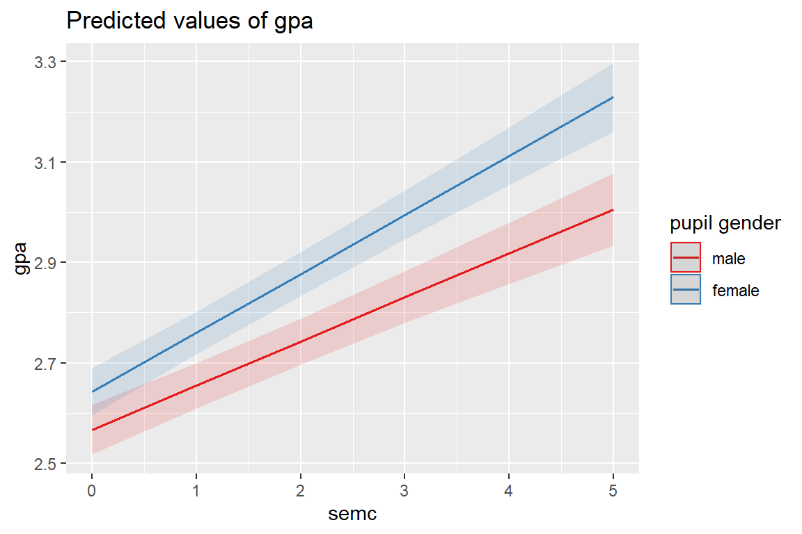

10 MLM, Longitudinal: Hox ch 5 - student GPA
library(tidyverse) # all things tidy
library(pander) # nice looking genderal tabulations
library(furniture) # nice table1() descriptives
library(texreg) # Convert Regression Output to LaTeX or HTML Tables
library(psych) # contains some useful functions, like headTail
library(sjstats) # ICC calculations
library(sjPlot) # Visualization for Models
library(effects) # Effect displays for Models
library(lme4) # non-linear mixed-effects models
library(haven) # read in SPSS dataset10.1 Background
The text “Multilevel Analysis: Techniques and Applications, Third Edition” (Hox, Moerbeek, and Van de Schoot 2017) has a companion website which includes links to all the data files used throughout the book (housed on the book’s GitHub repository).
The following example is used through out Hox, Moerbeek, and Van de Schoot (2017)’s chapater 5.
The GPA for 200 college students were followed for 6 consecutive semesters (simulated). Job status was also measured as number of hours worked for the same size occations. Time-invariant covariates are the student’s gender and high school GPA. The variable admitted will not be used.
data_raw <- haven::read_sav("https://github.com/MultiLevelAnalysis/Datasets-third-edition-Multilevel-book/raw/master/chapter%205/GPA2/gpa2long.sav") %>%
haven::as_factor() # retain the labels from SPSS --> factor
tibble::glimpse(data_raw) Rows: 1,200
Columns: 7
$ student <dbl> 1, 1, 1, 1, 1, 1, 2, 2, 2, 2, 2, 2, 3, 3, 3, 3, 3, 3, 4, 4...
$ occas <fct> year 1 semester 1, year 1 semester 2, year 2 semester 1, y...
$ gpa <dbl> 2.3, 2.1, 3.0, 3.0, 3.0, 3.3, 2.2, 2.5, 2.6, 2.6, 3.0, 2.8...
$ job <fct> 2 hours, 2 hours, 2 hours, 2 hours, 2 hours, 2 hours, 2 ho...
$ sex <fct> female, female, female, female, female, female, male, male...
$ highgpa <dbl> 2.8, 2.8, 2.8, 2.8, 2.8, 2.8, 2.5, 2.5, 2.5, 2.5, 2.5, 2.5...
$ admitted <fct> yes, yes, yes, yes, yes, yes, no, no, no, no, no, no, yes,... job
occas no job 1 hour 2 hours 3 hours 4 or more hours <NA>
year 1 semester 1 0 0 172 28 0 0
year 1 semester 2 0 0 169 31 0 0
year 2 semester 1 0 7 159 34 0 0
year 2 semester 2 0 5 169 26 0 0
year 3 semester 1 0 18 150 32 0 0
year 3 semester 2 0 22 148 30 0 0
<NA> 0 0 0 0 0 0data_long <- data_raw %>%
dplyr::mutate(student = factor(student)) %>%
dplyr::mutate(sem = case_when(occas == "year 1 semester 1" ~ 1,
occas == "year 1 semester 2" ~ 2,
occas == "year 2 semester 1" ~ 3,
occas == "year 2 semester 2" ~ 4,
occas == "year 3 semester 1" ~ 5,
occas == "year 3 semester 2" ~ 6)) %>%
dplyr::mutate(semc = sem - 1) %>%
dplyr::mutate(job = fct_drop(job)) %>%
dplyr::mutate(hrs = case_when(job == "no job" ~ 0,
job == "1 hour" ~ 1,
job == "2 hours" ~ 2,
job == "3 hours" ~ 3,
job == "4 or more hours" ~ 4)) %>%
dplyr::select(student, sex, highgpa, sem, semc, job, hrs, gpa) %>%
dplyr::arrange(student, sem)
psych::headTail(data_long, top = 10) student sex highgpa sem semc job hrs gpa
1 1 female 2.8 1 0 2 hours 2 2.3
2 1 female 2.8 2 1 2 hours 2 2.1
3 1 female 2.8 3 2 2 hours 2 3
4 1 female 2.8 4 3 2 hours 2 3
5 1 female 2.8 5 4 2 hours 2 3
6 1 female 2.8 6 5 2 hours 2 3.3
7 2 male 2.5 1 0 2 hours 2 2.2
8 2 male 2.5 2 1 3 hours 3 2.5
9 2 male 2.5 3 2 2 hours 2 2.6
10 2 male 2.5 4 3 2 hours 2 2.6
11 <NA> <NA> ... ... ... <NA> ... ...
12 200 male 3.4 3 2 2 hours 2 3.4
13 200 male 3.4 4 3 2 hours 2 3.5
14 200 male 3.4 5 4 1 hour 1 3.3
15 200 male 3.4 6 5 1 hour 1 3.4data_wide <- data_long %>%
furniture::wide(v.names = c("job", "hrs", "gpa"),
timevar = "sem",
id = "student")
psych::headTail(data_wide) student sex highgpa semc job.1 hrs.1 gpa.1 job.2 hrs.2 gpa.2
1 1 female 2.8 0 2 hours 2 2.3 2 hours 2 2.1
7 2 male 2.5 0 2 hours 2 2.2 3 hours 3 2.5
13 3 female 2.5 0 2 hours 2 2.4 2 hours 2 2.9
19 4 male 3.8 0 3 hours 3 2.5 2 hours 2 2.7
... <NA> <NA> ... ... <NA> ... ... <NA> ... ...
1177 197 female 2.1 0 2 hours 2 2.9 2 hours 2 2.5
1183 198 male 4 0 2 hours 2 2.5 2 hours 2 2.9
1189 199 female 2.3 0 2 hours 2 2.6 2 hours 2 2.3
1195 200 male 3.4 0 2 hours 2 2.8 2 hours 2 3.2
job.3 hrs.3 gpa.3 job.4 hrs.4 gpa.4 job.5 hrs.5 gpa.5 job.6 hrs.6
1 2 hours 2 3 2 hours 2 3 2 hours 2 3 2 hours 2
7 2 hours 2 2.6 2 hours 2 2.6 2 hours 2 3 2 hours 2
13 2 hours 2 3 3 hours 3 2.8 2 hours 2 3.3 2 hours 2
19 2 hours 2 2.4 2 hours 2 2.7 2 hours 2 2.9 2 hours 2
... <NA> ... ... <NA> ... ... <NA> ... ... <NA> ...
1177 3 hours 3 2.8 2 hours 2 3.2 2 hours 2 3.3 2 hours 2
1183 2 hours 2 3 2 hours 2 3.2 1 hour 1 3.3 2 hours 2
1189 3 hours 3 2.7 2 hours 2 2.7 2 hours 2 2.8 3 hours 3
1195 2 hours 2 3.4 2 hours 2 3.5 1 hour 1 3.3 1 hour 1
gpa.6
1 3.3
7 2.8
13 3.4
19 2.7
... ...
1177 3.8
1183 3.4
1189 2.8
1195 3.4data_wide %>%
furniture::table1(highgpa, gpa.1, job.1, hrs.1,
splitby = ~ sex,
output = "html",
test = TRUE)| male | female | P-Value | |
|---|---|---|---|
| n = 95 | n = 105 | ||
| highgpa | 0.31 | ||
| 3.0 (0.6) | 2.9 (0.6) | ||
| gpa 1 | 0.094 | ||
| 2.6 (0.3) | 2.6 (0.3) | ||
| job 1 | 0.192 | ||
| 1 hour | 0 (0%) | 0 (0%) | |
| 2 hours | 78 (82.1%) | 94 (89.5%) | |
| 3 hours | 17 (17.9%) | 11 (10.5%) | |
| hrs 1 | 0.132 | ||
| 2.2 (0.4) | 2.1 (0.3) |
data_wide %>%
furniture::table1(gpa.1, gpa.2, gpa.3, gpa.4, gpa.5, gpa.6,
splitby = ~ sex,
output = "html")| male | female | |
|---|---|---|
| n = 95 | n = 105 | |
| gpa 1 | ||
| 2.6 (0.3) | 2.6 (0.3) | |
| gpa 2 | ||
| 2.7 (0.3) | 2.8 (0.3) | |
| gpa 3 | ||
| 2.7 (0.4) | 2.9 (0.3) | |
| gpa 4 | ||
| 2.8 (0.4) | 3.0 (0.3) | |
| gpa 5 | ||
| 2.9 (0.4) | 3.1 (0.3) | |
| gpa 6 | ||
| 3.0 (0.4) | 3.2 (0.4) |
10.2 MLM
10.2.1 Null Models and ICC
# Intraclass Correlation Coefficient
Adjusted ICC: 0.369
Conditional ICC: 0.369Over a third of the variance in the 6 GPA measures is variance between individuals, and about two-thirds is variance within individuals across time.
# Intraclass Correlation Coefficient
Adjusted ICC: 0.523
Conditional ICC: 0.412After accounting for the linear change in GPA over semesters, about half of the remaining variance in GPA scores is attributable person-to-person differences.
10.2.2 Fixed Effects
fit_lmer_0_ml <- lme4::lmer(gpa ~ 1 + (1|student),
data = data_long,
REML = FALSE)
fit_lmer_1_ml <- lme4::lmer(gpa ~ semc + (1|student),
data = data_long,
REML = FALSE)
fit_lmer_2_ml <- lme4::lmer(gpa ~ semc + hrs + (1|student),
data = data_long,
REML = FALSE)
fit_lmer_3_ml <- lme4::lmer(gpa ~ semc + hrs + highgpa + sex + (1|student),
data = data_long,
REML = FALSE)
================================================================================
Model 1 Model 2 Model 3 Model 4
--------------------------------------------------------------------------------
(Intercept) 2.865 *** 2.599 *** 2.970 *** 2.641 ***
(0.019) (0.022) (0.044) (0.098)
semc 0.106 *** 0.102 *** 0.102 ***
(0.004) (0.004) (0.004)
hrs -0.171 *** -0.172 ***
(0.018) (0.018)
highgpa 0.085 **
(0.028)
sexfemale 0.147 ***
(0.033)
--------------------------------------------------------------------------------
AIC 919.456 401.649 318.399 296.760
BIC 934.726 422.009 343.849 332.390
Log Likelihood -456.728 -196.825 -154.200 -141.380
Num. obs. 1200 1200 1200 1200
Num. groups: student 200 200 200 200
Var: student (Intercept) 0.057 0.063 0.052 0.045
Var: Residual 0.098 0.058 0.055 0.055
================================================================================
*** p < 0.001; ** p < 0.01; * p < 0.05Data: data_long
Models:
fit_lmer_0_ml: gpa ~ 1 + (1 | student)
fit_lmer_1_ml: gpa ~ semc + (1 | student)
fit_lmer_2_ml: gpa ~ semc + hrs + (1 | student)
fit_lmer_3_ml: gpa ~ semc + hrs + highgpa + sex + (1 | student)
npar AIC BIC logLik deviance Chisq Df Pr(>Chisq)
fit_lmer_0_ml 3 919.46 934.73 -456.73 913.46
fit_lmer_1_ml 4 401.65 422.01 -196.82 393.65 519.807 1 < 2.2e-16 ***
fit_lmer_2_ml 5 318.40 343.85 -154.20 308.40 85.250 1 < 2.2e-16 ***
fit_lmer_3_ml 7 296.76 332.39 -141.38 282.76 25.639 2 2.707e-06 ***
---
Signif. codes: 0 '***' 0.001 '**' 0.01 '*' 0.05 '.' 0.1 ' ' 110.2.3 Variance Explained by linear TIME at Level ONE
Groups Name Std.Dev.
student (Intercept) 0.23826
Residual 0.31239 Groups Name Std.Dev.
student (Intercept) 0.25172
Residual 0.24090 10.2.3.1 Raudenbush and Bryk
- Explained variance is a proportion of first-level variance only
- A good option when the multilevel sampling process is is close to two-stage simple random sampling
Raudenbush and Bryk Approximate Formula - Level 1 approximate \[ approx \;R^2_1 = \frac{\sigma^2_{e-BL} - \sigma^2_{e-MC}} {\sigma^2_{e-BL} } \tag{Hox 4.8} \]
[1] 0.408163310.2.4 Variance Explained by linear TIME at Level TWO
10.2.4.1 Raudenbush and Bryk
Raudenbush and Bryk Approximate Formula - Level 2 \[ approx \; R^2_s = \frac{\sigma^2_{u0-BL} - \sigma^2_{u0-MC}} {\sigma^2_{u0-BL} } \tag{Hox 4.9} \]
[1] -0.1052632YIKES! Negative Variance explained!
10.2.4.2 Snijders and Bosker
Snijders and Bosker Formula Extended - Level 2 \[ R^2_2 = 1 - \frac{\frac{\sigma^2_{e-MC}}{B} + \sigma^2_{u0-MC}} {\frac{\sigma^2_{e-BL}}{B} + \sigma^2_{u0-BL}} \]
\(B\) is the average size of the Level 2 units. Technically, you should use the harmonic mean, but unless the clusters differ greatly in size, it doesn’t make a huge difference.
[1] 0.009090909Reason: The intercept only model overestimates the variance at the occasion level and underestimates the variance at the subject level (se chapter 4 of Hox, Moerbeek, and Van de Schoot (2017))
10.2.5 Random Effects
fit_lmer_3_re <- lme4::lmer(gpa ~ semc + hrs + highgpa + sex + (1|student),
data = data_long,
REML = TRUE)
fit_lmer_4_re <- lme4::lmer(gpa ~ semc + hrs + highgpa + sex + (semc|student),
data = data_long,
REML = TRUE)Data: data_long
Models:
fit_lmer_3_re: gpa ~ semc + hrs + highgpa + sex + (1 | student)
fit_lmer_4_re: gpa ~ semc + hrs + highgpa + sex + (semc | student)
npar AIC BIC logLik deviance Chisq Df Pr(>Chisq)
fit_lmer_3_re 7 328.84 364.47 -157.42 314.84
fit_lmer_4_re 9 219.93 265.75 -100.97 201.94 112.9 2 < 2.2e-16 ***
---
Signif. codes: 0 '***' 0.001 '**' 0.01 '*' 0.05 '.' 0.1 ' ' 110.2.6 Cross-Level Interaction
fit_lmer_4_ml <- lme4::lmer(gpa ~ semc + hrs + highgpa + sex + (semc|student),
data = data_long,
REML = FALSE)
fit_lmer_4_re <- lme4::lmer(gpa ~ semc + hrs + highgpa + sex + (semc|student),
data = data_long,
REML = TRUE)
fit_lmer_5_ml <- lme4::lmer(gpa ~ semc + hrs + highgpa + sex + semc:sex + (semc|student),
data = data_long,
REML = FALSE)
fit_lmer_5_re <- lme4::lmer(gpa ~ semc + hrs + highgpa + sex + semc:sex + (semc|student),
data = data_long,
REML = FALSE)
====================================================================
Model 1 Model 2 Model 3
--------------------------------------------------------------------
(Intercept) 2.56 *** 2.58 *** 2.58 ***
(0.09) (0.09) (0.09)
semc 0.10 *** 0.09 *** 0.09 ***
(0.01) (0.01) (0.01)
hrs -0.13 *** -0.13 *** -0.13 ***
(0.02) (0.02) (0.02)
highgpa 0.09 *** 0.09 *** 0.09 ***
(0.03) (0.03) (0.03)
sexfemale 0.12 *** 0.08 * 0.08 *
(0.03) (0.03) (0.03)
semc:sexfemale 0.03 ** 0.03 **
(0.01) (0.01)
--------------------------------------------------------------------
AIC 188.12 182.97 182.97
BIC 233.93 233.87 233.87
Log Likelihood -85.06 -81.49 -81.49
Num. obs. 1200 1200 1200
Num. groups: student 200 200 200
Var: student (Intercept) 0.04 0.04 0.04
Var: student semc 0.00 0.00 0.00
Cov: student (Intercept) semc -0.00 -0.00 -0.00
Var: Residual 0.04 0.04 0.04
====================================================================
*** p < 0.001; ** p < 0.01; * p < 0.05Data: data_long
Models:
fit_lmer_4_ml: gpa ~ semc + hrs + highgpa + sex + (semc | student)
fit_lmer_5_ml: gpa ~ semc + hrs + highgpa + sex + semc:sex + (semc | student)
npar AIC BIC logLik deviance Chisq Df Pr(>Chisq)
fit_lmer_4_ml 9 188.12 233.93 -85.059 170.12
fit_lmer_5_ml 10 182.97 233.87 -81.486 162.97 7.1464 1 0.007511 **
---
Signif. codes: 0 '***' 0.001 '**' 0.01 '*' 0.05 '.' 0.1 ' ' 1